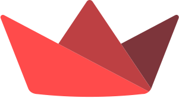
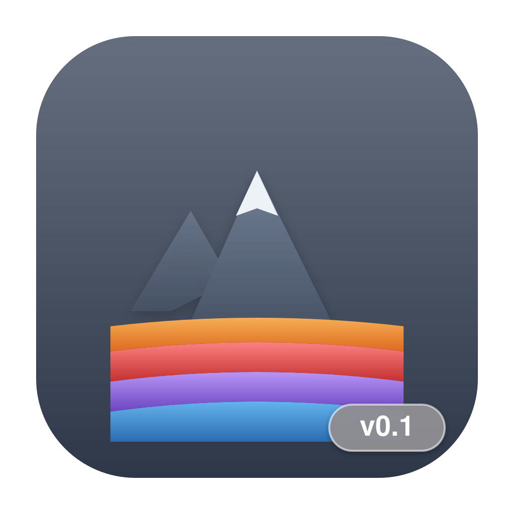
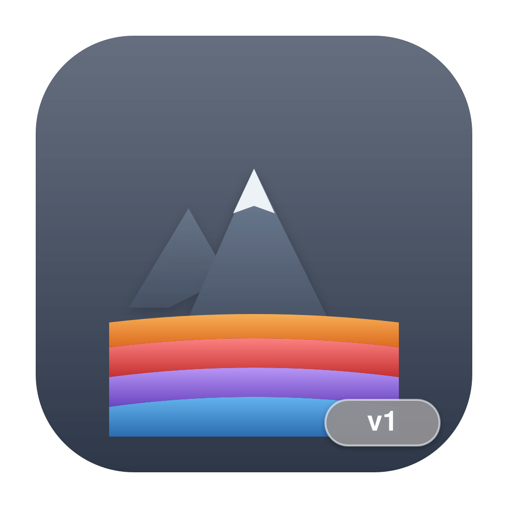

GeoLite is the interactive geological atlas that brings together near real-time seismic data, NASA volcanoes, minerals and world climate. Pick the version that fits you: the open source educational one for students, or the professional one with a 3D globe.

Three.js Qwen 2.5 Coder NASA GIBSTwo ready-to-use macOS applications: download the .dmg file and drag it into Applications. If you prefer the .zip archive (same app, no disk image), it is available below.

Open source · MITThe educational version, free for everyone

Non-commercial useThe professional version with 3D globes
Real data from public scientific sources: USGS, NASA, Open-Meteo and Wikimedia Commons.
The public USGS feed updates the map with the magnitude, depth and location of every tremor. Filter by time period and minimum magnitude, or in the 3D globe click an earthquake to see which minerals from the dataset are plausible at that site, based on the distance from known deposits and the focal depth band.
Open volcanic events come from the NASA EONET catalog, with a date and a link to the source. v1 adds 3D models built from scratch — stratovolcanoes, shield volcanoes and calderas — with procedural terrain and a cross-section that shows the conduit and the magma chamber. v0.1 offers a qualitative simulation controlled by shape, pressure, gas and viscosity.
An educational dataset of mineral occurrences with authentic images from Wikimedia Commons. In v1 the minerals become a “Minerals in the ground” panel tied to the selected earthquake: for each mineral you get the reason behind its ranking (closeness of the known deposit and focal depth).
v1 shows the globe with zones colored by temperature (NASA GIBS MERRA-2 layer, with a value legend in °C) and OSCAR ocean currents animated as particles — the date of the data is always shown in the interface. v0.1 offers the climate snapshot via Open-Meteo.
No Python and no dependencies to install: the application is complete and self-contained.
Choose a version (v0.1 or v1) and download the .dmg file above.
Open the downloaded file: a disk mounts containing the app and the Applications icon. Drag GeoLite into Applications.
On first launch, right-click the app → Open, then confirm: macOS asks for confirmation only the first time for apps that are not signed with an Apple certificate.
The app starts and opens by itself in your browser on localhost. Sign up with a username and a password: everything stays on your Mac.
# Prefer the terminal? After downloading the .zip:
unzip geolite-v1.zip -d /Applications
open "/Applications/GeoLite v1.app"
Requirements: macOS 12 or later on a Mac with an Apple Silicon chip (M1–M4). Internet connection: required for seismic, volcanic and climate data (and for v1's AI chat); v0.1 still works locally for authentication and the Qwen chat.
Source code included in the app, MIT license: you are free to use, study, modify and redistribute it, including for commercial purposes, as long as you keep the original copyright.
The local Qwen model and the third-party libraries keep their own licenses (see CREDITS-TERZE-PARTI.txt included in the app).
Free for personal, educational, academic and research use. Commercial use (resale, inclusion in paid products, etc.) is prohibited without written permission. Full text in LICENZA.txt included in the app.
Third-party AI APIs (Groq, OpenAI, Moonshot…) remain subject to their own terms of service.
Application — Python, Streamlit, pandas, requests. v1 adds Three.js for the 3D globes and an OpenAI-compatible AI interface; v0.1 uses Folium for the maps and local Qwen 2.5 Coder for the chat.
Icons — drawn for GeoLite; the badge in the bottom-right corner identifies the version.
Data sources — USGS Earthquake Hazards Program, NASA EONET, NASA GIBS, Open-Meteo, Wikimedia Commons.
Thanks — to everyone who studies the Earth: every map on this page comes from the data that scientists and public agencies share freely with all of us.